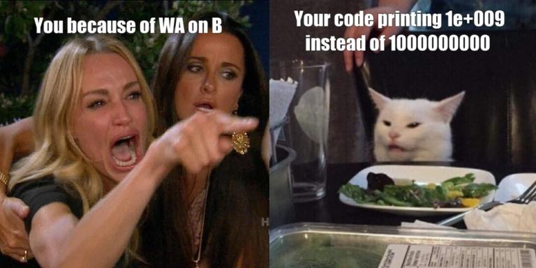
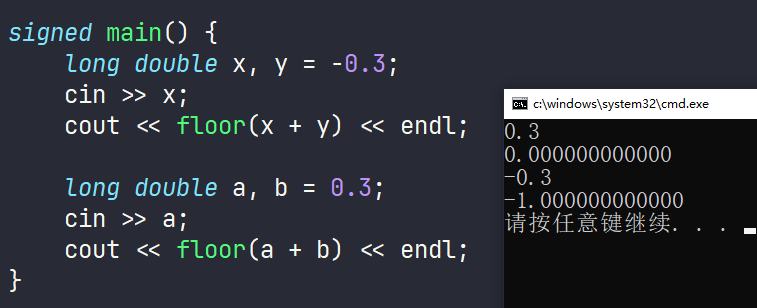
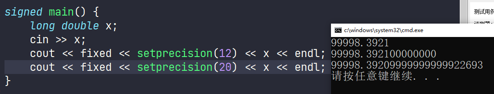
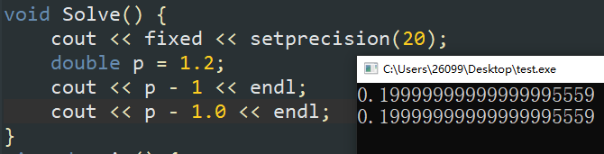
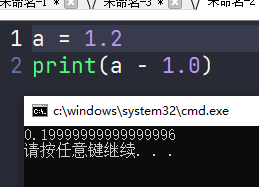
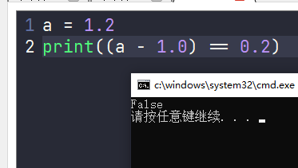

C++ 默认有效位数为 $6$ 位，指数位和小数位共享。超过有效位数时，只输出前 $6$ 位，且第六位四舍五入运算。
cout << 12345.54555 << "\n"; // 输出 12345.5
cout << 12345.55555 << "\n"; // 输出 12345.6，被四舍五入了
cout << 123456.45555 << "\n"; // 输出 123456
cout << 123456.55555 << "\n"; // 输出 123457，被四舍五入了
当指数为超过有效位数后，自动变为科学计数法输出。
cout << 1234567.12345 << "\n"; // 输出 1.23457e+06
cout << 12345678901234567890.12345 << "\n"; // 输出 1.23457e+19
在使用浮点数的情况下，需要尽可能的使用 fixed 和 setprecision 函数控制输出，否则可能发生意想不到的错误。我个人的习惯是无论是否使用浮点数，都会将 cout << fixed << setprecision(12); 语句写到头文件中以防出现意外。

E使用科学计数法时，本质上是将数字转变为了浮点数后再进行下一步计算，而浮点数存在精度问题，在大于 1E16 时超过有效位，会导致计算无效。
const int N15 = 1E15 + 1;
const int N16 = 1E16 + 1;
const int Ntt = 1E16 + 123456789;
cout << N15 << endl; // 输出 1000000000000001
cout << N16 << endl; // 输出 10000000000000000
cout << Ntt << endl; // 输出 10000000123456788
fixed 函数该函数用于切换有效位数的判断逻辑，未使用时指数位和小数位共享有效位数，使用后变为小数位独享。
cout << fixed << 123456.1234564 << "\n"; // 输出 123456.123456
cout << fixed << 123456.1234565 << "\n"; // 输出 123457.123457，被四舍五入了
setprecision 函数该函数用于修改有效位数，单独使用时指数位和小数位共享修改后的有效位数，与 fixed 配合时变为小数位独享。
cout << setprecision(10) << 123456.123456; // 输出 123456.1235
cout << fixed << setprecision(10) << 123456.123456; // 输出 123456.1234560000
使用 fixed 和 setprecision 配合 numeric_limits<T>::max() 获取最大值时，我们能够得到一个长度为 $309$ 位的数字，约等于 1.7976931348623157 * 10^308 ，这个数字表示的就是 double 类型能够表示的最大正实数；而事实上，虽然 double 类型的有效数字仅有 $16$ 位，但是其允许的范围是 $-308$ 到 $+308$ 的指数范围。当你试图用 double 类型表示一个比这个数字更大/更小的实数，就会发生溢出错误，务必注意这与整数类型完全不同。
double x = numeric_limits<double>::max();
cout << x << "\n"; // 输出 1.79769e+308
cout << setprecision(10) << x << "\n"; // 输出 1.797693135e+308
cout << fixed << setprecision(10) << x << "\n"; // 输出完整数字
当我们想要获取整数类型的最小值时，通常会使用到 numeric_limits<T>::min() 语句，但是这个函数并不能获取浮点数的最小值，而是会返回浮点数的最小正规范化值，它是一个非常小的正数，约等于 2.22507e-308 ，务必注意这与整数类型完全不同。
double x = numeric_limits<double>::min();
cout << x << "\n"; // 输出 2.22507e-308
cout << setprecision(10) << x << "\n"; // 输出 2.225073859e-308
cout << fixed << setprecision(10) << x << "\n"; // 输出 0.0000000000
当我们真的想要使用函数得到浮点数的最小值时，需要使用 numeric_limits<T>::lowest() 函数。
double x = numeric_limits<double>::lowest();
cout << x << "\n"; // 输出 -1.79769e+308
cout << setprecision(10) << x << "\n"; // 输出 -1.797693135e+308
cout << fixed << setprecision(10) << x << "\n"; // 输出完整数字
而整数类型没有非规范化值或者零的概念，所以它们的最小正规范化值和最小负有限值是相同的。
using i64 = long long;
cout << numeric_limits<i64>::min() << "\n"; // 输出 -9223372036854775808
cout << numeric_limits<i64>::lowest() << "\n"; // 输出 -9223372036854775808
这一问题在 pow 函数的使用过程中非常常见。众所周知，pow 函数会返回一个浮点数类型的答案，这就导致令人头疼的精度问题会再次出现。
double p = pow(8, 1.0 / 3);
double q = pow(216, 1.0 / 3);
cout << fixed << setprecision(12) << p << "\n"; // 输出 2.000000000000
cout << fixed << setprecision(20) << p << "\n"; // 输出 2.00000000000000000000
cout << fixed << setprecision(12) << q << "\n"; // 输出 6.000000000000
cout << fixed << setprecision(20) << q << "\n"; // 输出 5.99999999999999911182
如果这一问题配合上隐式转换，就会产生灾难（备注：$\sqrt[3]{216}=6$，由于 pow 得到的是 $5.99999\dots$ ，隐式转换将小数部分全部舍去后输出 $5$ ）。
double q = pow(216, 1.0 / 3);
cout << (int)q << "\n"; // 输出 5
注：如果需要开立方根，C++库中自带函数
cbrt，用法与sqrt一致，且两者都保证精确。
见下例，我们队伍曾在区域赛赛场上犯过这个错误，教训非常之惨痛！
int num1 = 0, num2 = 0;
for (int i = 1; i <= 100; i++) {
if (sqrt(i) * sqrt(i) == i) {
num1++;
}
if ((int)sqrt(i) * (int)sqrt(i) == i) {
num2++;
}
}
cout << num1 << "\n"; // 输出 49，答案错误！
cout << num2 << "\n"; // 输出 10，答案正确
我们都知道有一些库函数有专门针对浮点数的版本，例如：绝对值函数 abs 的浮点数版本 fabs、开根号函数 sqrt 的浮点数版本 sqrtf。首先要声明的是这些浮点数版本接受的是 float 类型的参数而不是精度更高的 double 类型，且由于浮点数存在精度问题，在不需要使用的情况下使用属于自讨没趣。
long long x = -12345678901234567;
cout << fixed << setprecision(6);
cout << abs(x) << "\n"; // 输出 12345678901234567
cout << fabs(x) << "\n"; // 输出 12345678901234568.000000，误差更大
除此之外，由于接受的是 float 类型的参数，在大多情况下的计算精度都较低。下方例子中，精确计算的答案应当为 $\sqrt{1234567890.1234567} = 35136.418288201441$ ，显然 sqrt 计算得到的答案误差更小。
double x = 1234567890.1234567;
cout << fixed << setprecision(12);
cout << sqrt(x) << "\n"; // 输出 35136.418288201443
cout << __builtin_sqrt(x) << "\n"; // 输出 35136.418288201443
cout << sqrtf(x) << "\n"; // 输出 35136.417968750000，误差更大
综上，不要使用浮点数版本。
某些函数并不支持浮点数传入，例如 minmax 函数，翻阅库之后我们可以发现，其只支持传入整数/字符串列表；
由于 IEEE 754 规定 long double 的精度不少于 double 的精度，主流的编程竞赛平台$^{\text{注}}$也确实做到了这一点，故个人习惯使用 long double 代替 double；但是显然，更高的精度会导致运行时间变慢，请谨慎抉择。（$^{\text{注}}$：在现版本的杭电OJ，某些情况下 long double 的精度不如 double）。
浮点数整数和小数部分共享精度，所以在计算时，整数部分越大，小数部分精度越差。一般我们默认在数据集超过 $10^6$ 时不再使用浮点数进行运算，否则会出现很严重的精度误差。
读入浮点数的速度非常慢，在大量读入浮点数、需要卡常的情况下，为了加快读入速度，一般我们默认不直接读入浮点数：对于整数输入，我们一般采取先读入整数后转换成浮点数的方式；对于浮点数输入，我们一般采取先读入字符串后转换成浮点数的方式。当输入量在 $10^5$ 量级时，这样做可以快 $10$ 倍（使用 例题 进行测试）。
读入浮点数会出现精度误差，我时常看到有人在代码中对某一些变量采取诸如 += 1E-14 的调整操作，最终以极短的代码与误差过题（此处 参考，这一份代码对 r 变量进行了调整操作，但是经我测试将偏移量修改为 += 1E-15 就无法过题），由于我实在是没能弄明白这究竟是基于数据集采取的卡精度手段还是能被广泛运用的编程技巧，故暂时我也没法给出一个合适的结论。




